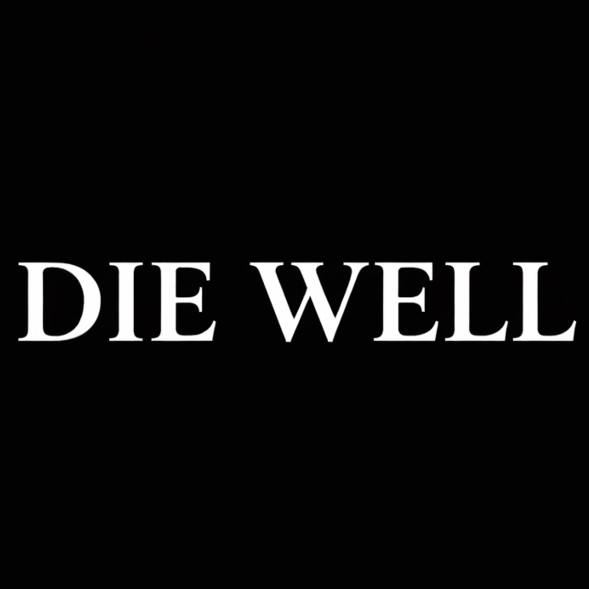

Traditio Media
Building for the next thousand years.
Traditio Media Podcasts

Die Well
The Christian life should be one that is focused on eternity. We get one life, we need to ensure we die well.
Building for the next thousand years.

The Christian life should be one that is focused on eternity. We get one life, we need to ensure we die well.